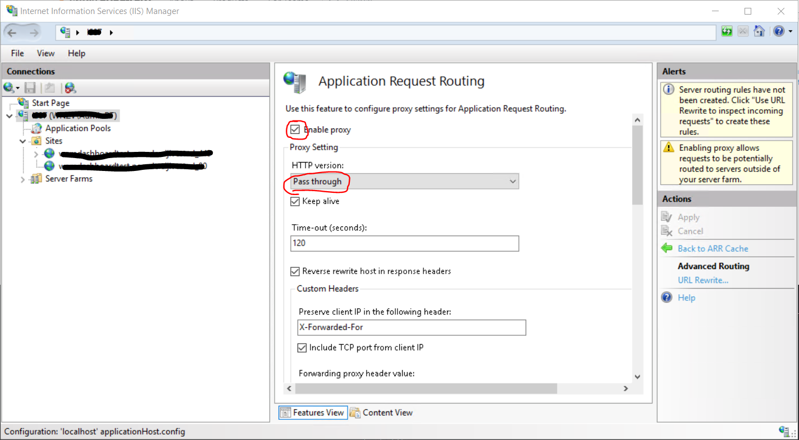
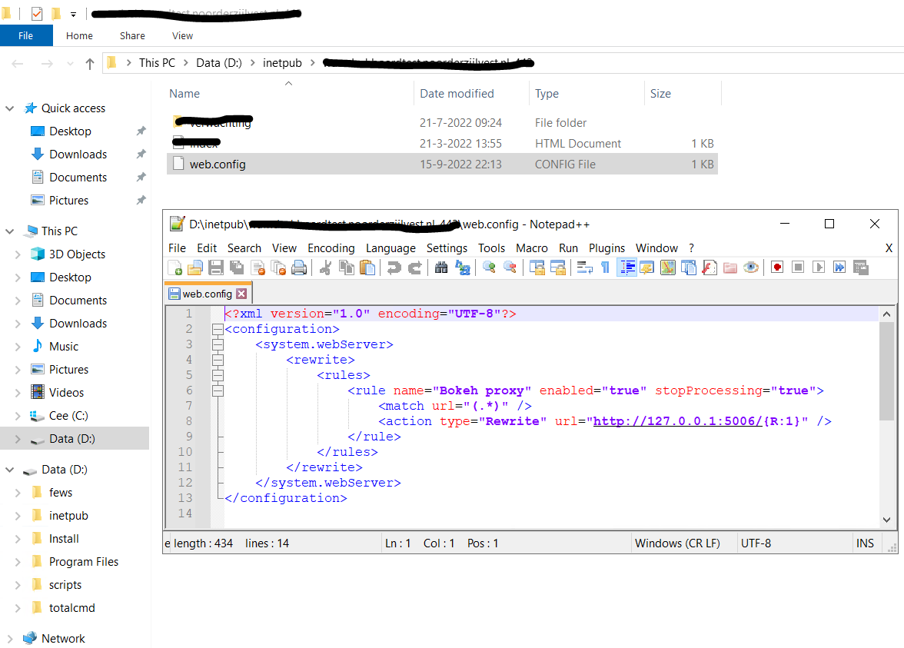
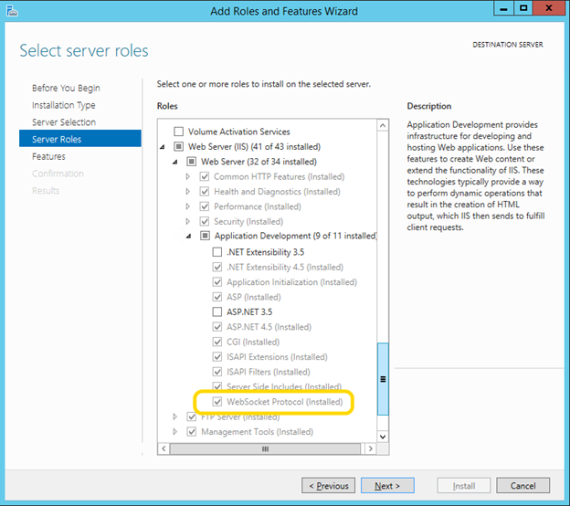

Routing via Windows Internet Information Services (IIS)
Here you can find info on how to route your Bokeh HydroDashboard via Application Request Rerouting (ARR) in Windows IIS.
In this tutorial we use the example of the dashboard backend application running at:
localhost:5006/my_dashboard
Installation
- Install the URL Rewrite package from the downloads section on the IIS website or Microsoft Web Platform Installer.
-
Install the ARR (application request routing) 3.0 module from the downloads section on the IIS website or Microsoft Web Platform Installer.
Note (!) web-socket routing is only possible from ARR 3.0.
Configuration of IIS
- From the left pane, double-click on the main tree node with your server name on it, and from the modules, double-click on Application Request Routing Cache. In the right pane, choose Enable proxy, and set HTTP version to Pass through:

- In the left pane, right-click on the website you created and select Explore. Windows explorer will open in inetpub\your_website. Open, or create a new web.config file at this location, so inetpub\your_website\web.config:

You can copy-paste this section:
<?xml version="1.0" encoding="UTF-8"?>
<configuration>
<system.webServer>
<rewrite>
<rules>
<rule name="Bokeh proxy" enabled="true" stopProcessing="true">
<match url="(.*)" />
<action type="Rewrite" url="http://127.0.0.1:5006/{R:1}" />
</rule>
</rules>
</rewrite>
</system.webServer>
</configuration>
Allow web-socket routing
-
After restarting your IIS the backend-app should be re-routed to the root-adress of your website. If your app runs with content you're done.
If not, you will only see an empty html page without content. In this case you have to enable the WebSocket Protocol in the Add Roles and Features Wizard of your server:
